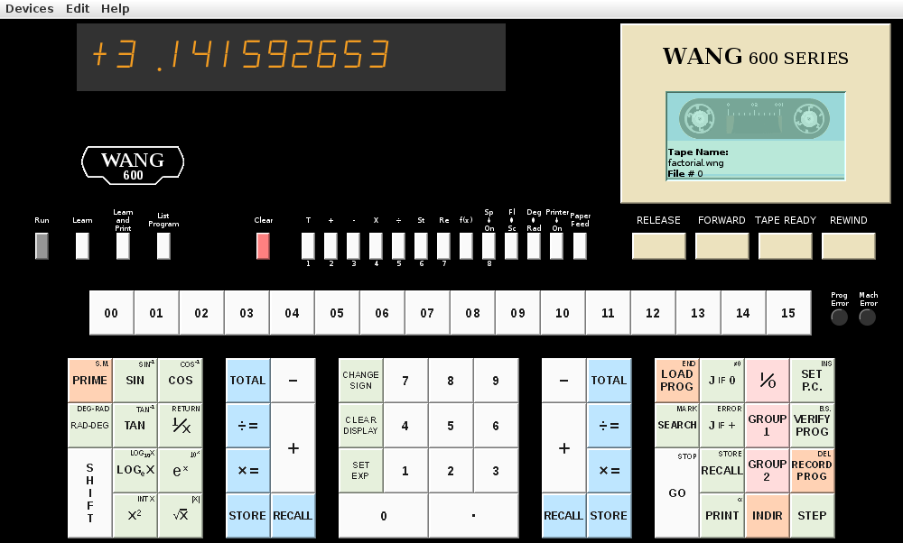

<!DOCTYPE HTML PUBLIC "-//W3C//DTD HTML 4.01 Transitional//EN">
<HTML LANG="en">
<HEAD>
<TITLE>Wang 600 Programmable Calculator Simulator</TITLE>
<!-- $Id: wang600.html,v 1.7 2011/06/07 22:08:50 drmiller Exp $ >
<META NAME="description" LANG="en" CONTENT="Wang 600 Programmable Calculator Simulator">
<META NAME="keywords" LANG="en" CONTENT="Wang Laboratories Inc,
Wang Programmable Calculator,
Wang 520, Wang 600, Wang 700, Wang 720,
Wang 601 OutputWriter,
Wang 602 OutputWriter,
Wang 611 OutputWriter,
Wang 630 Fixed/Removable Disk,
Wang ROM,
Wang microcode,
Wang Simulator">
</HEAD>
<BODY>
<H2>Wang 600 Programmable Calculator Simulator</H2>



<P>This simulator actually runs a microcode image extracted from
a real Wang 600. Since it is a hardware simulator running
real microcode, it can be used to discover and understand
the behavior of the original Wang 600's (up to the limitations
of the hardware simulation).

<P>Several peripheral/add-on devices are supported,
in addition to the (normally) built-in printer and
tape drive. These include:

<UL>
<LI>Expansion ROMs (plugged on top of calculator)
<LI>Models 601/602/611 "modified IBM Selectric" plotting OutputWriter
<LI>Model 630 Fixed/Removable Disk
</UL>

<P>These devices are controlled through the "Devices" menu.

<P>Online help is provided through clicking on the "ghost"
Help button in the lower-right corner. This includes help running
in the simulator environment as well as standard operation
and programming of the Wang 600.

<P>Printed output (builtin or OutputWriter) appears in separate,
dedicated, windows. A menu on the window provides for Printing
(to a real printer), Saving to a file,
and "Tearing Off" (clearing window).

<P>Special thanks to Rick Bensene,
<A HREF="http://www.oldcalculatormuseum.com">The Old Calculator Museum</A>,
for help and materials to make the simulator more realistic.

<P>Also see Alf Urban's <A HREF="http://www.genealpha.de/wang/">Wang 600 Emulator</A>.

<P>Other links of interest:
<UL>
<LI><A HREF="http://www.thebattles.net/oddments/index.html#wang">
		Wang calculator schematics</A>
<LI><A HREF="http://deadmeatmarketing.blogspot.com/2008/06/wang-600.html">
		It Ain't Dead Yet</A>
</UL>

<P>Dedicated to Harold "Pepper" Roberts, my high school computer instructor,
who fought to keep, maintain, and upgrade what was, at the time,
a very expensive piece of equipment for a high school to own.

<H4>Help Files</H4>

<UL>
<LI><A HREF="wang600docs/wang600.html">Basic Operation</A>
<LI><A HREF="wang600docs/wang600calc.html">Using the Calculator</A>
<LI><A HREF="wang600docs/wang600samp.html">Sample Programs</A>
<LI><A HREF="wang600docs/wang600tape.html">Using the Tape Drive</A>
<LI><A HREF="wang600docs/wang600prog.html">How to Program</A>
<LI><A HREF="wang600docs/wang600tech.html">Programming Techniques</A>
<LI><A HREF="wang600docs/wang600func.html">Programming Functions</A>
<LI><A HREF="wang600docs/wang600codes.html">Program Codes</A>
<LI><A HREF="wang600docs/wang600bycode.html">Functions by Code</A>
<LI><A HREF="wang600docs/wang600sim.html">About the Simulator</A>
</UL>

<H4>Disclaimer</H4>

<P>As this is my first Java project, and is still evolving, it may
not operate to everyone's satisfaction and I make no claims
or guarantees about it's usefullness or suitability for any given
purpose. It is not known to be destructive in any way, however
since it does allow the user to create files there is a possibility
of data loss if unintended files are overwritten.

<H4>License</H4>

<P>This software is provided free of charge, including the source code.
It may be modified and redistributed provided no fees are charged,
original copyright notices are retained,
and modifications are submitted back to the author.

<H4>Downloads</H4>

The complete source, and pre-built bundles for select platforms, are available
at:

<P><A HREF="http://sebhc.durgadas.com">My Downloads Page</A>

<P>Pre-built packages may be installed by unpacking the archive (creates a subdir
named "wang600apc") and then changing directory to "./wang600apc" and running the
INSTALL script (installs sample programs).
The calculator simulation may be run using the "run" script
in the same directory.

<P>The source may be built by unpacking the w600-sim.tgz archive
(creates subdirectory "w600-sim"), changing directory to "./w600-sim",
and typing "make". The simulator can be run from that directory
using the command "java w600_fe".
Or you can type "make install" to install into
a "wang600apc" subdirectory in your home directory, which also runs the INSTALL
script from there to create the "Wang600Files" folder and sample programs.
Then the simulator can be run the same as for the pre-built packages
(use the "run" script).

<P>The simulator may be run in a "backwards" mode where the simulator code
runs in the foreground and the GUI runs "background". In this mode, the
simulator is run interactively and may be used to trace and otherwise
examine the state of the "machine". To run this mode, type "./w600-sim -i -g"
from the "w600-sim" subdirectory. You will get a "%" prompt and the GUI will startup.
Type "go" to initialize the calculator and GUI. Other commands are shown by
the "help" command. The simulator may be interrupted with ctrl-C, which
brings up the "%" prompt again, after which "go" will resume.
Closing the GUI window also brings up the "%" prompt, but the calculator
can no longer be run (GUI is not respawned). The command "quit" will
end the simulation (and the GUI, if running).

<H4>Contact</H4>

You may contact me at <A HREF="mailto:durgadas311@gmail.com">durgadas311@gmail.com</A>

<P>Copyright &copy; 2011, Douglas Miller

</BODY>
</HTML>
